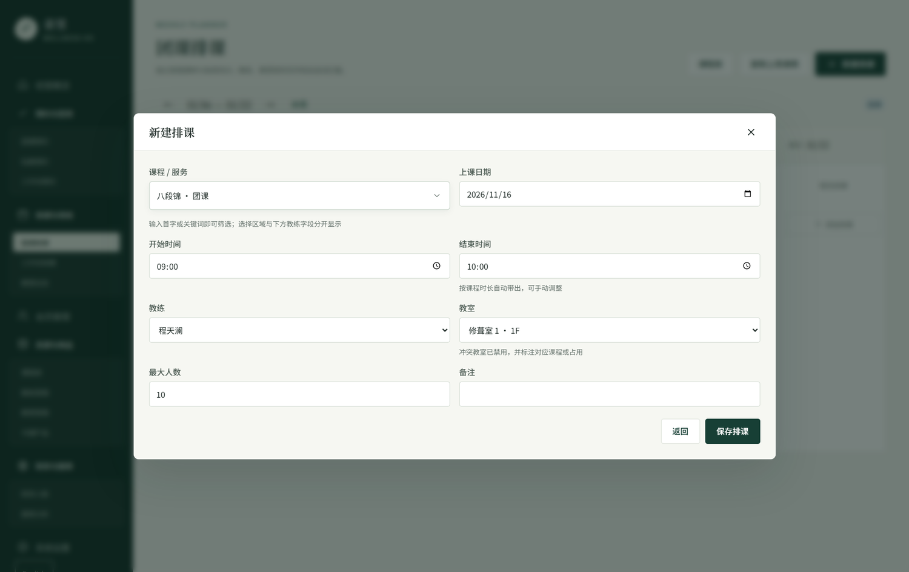
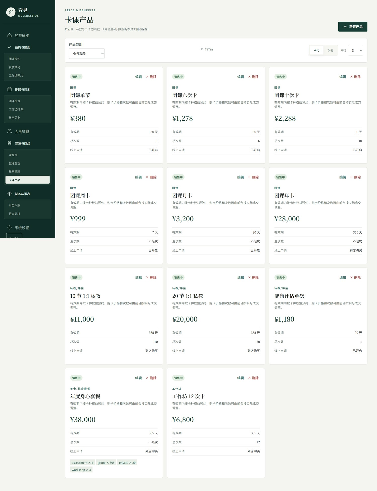
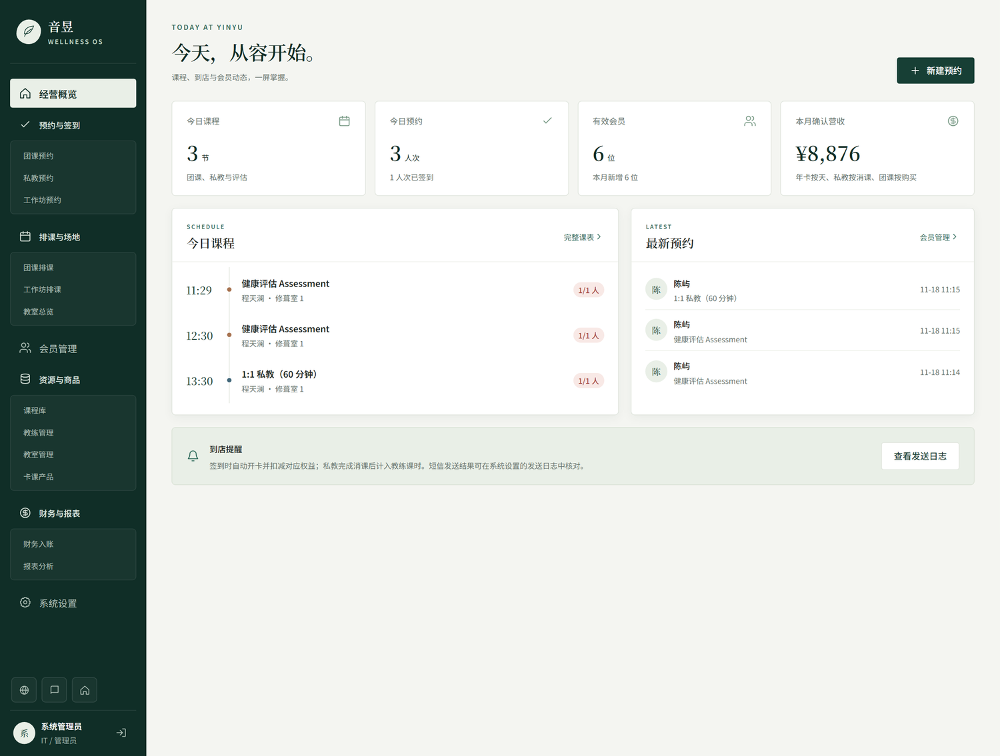
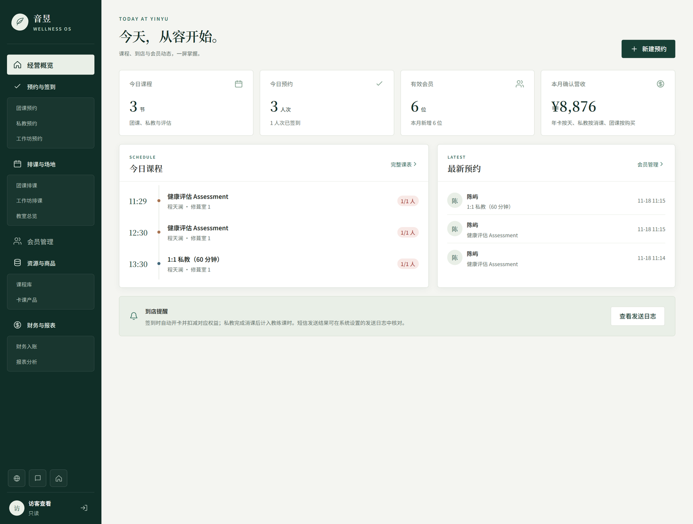
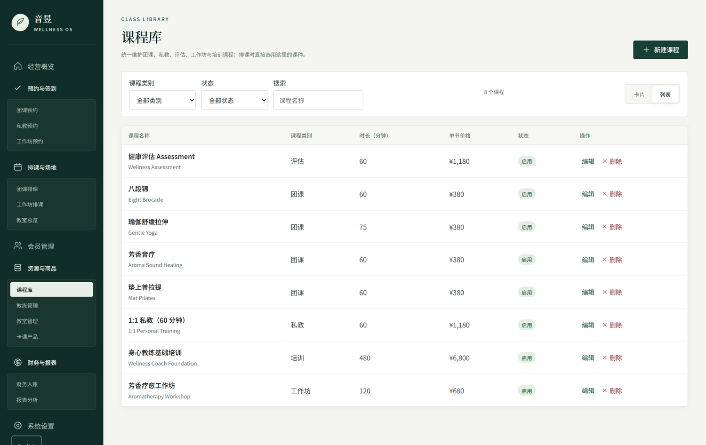
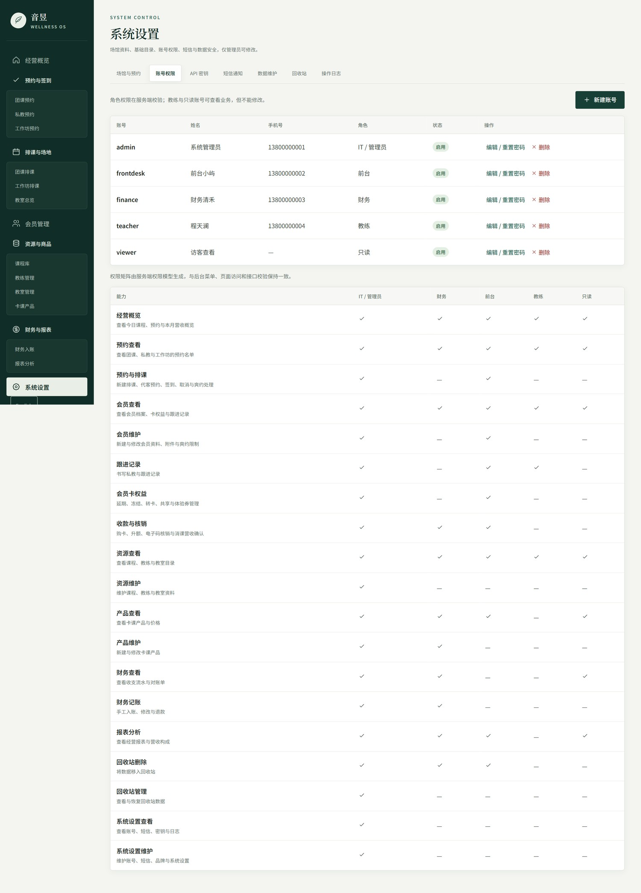
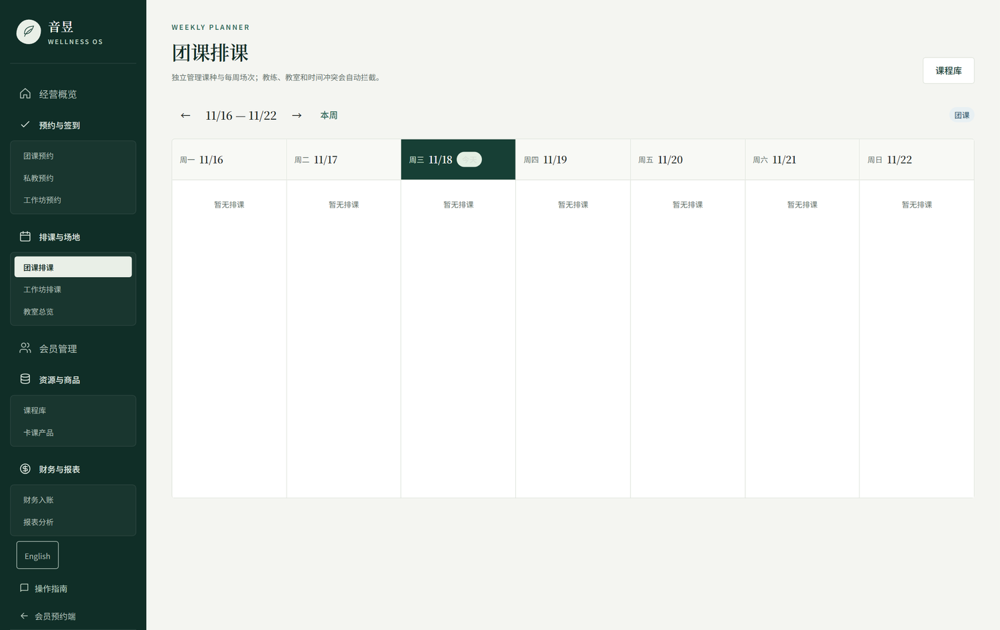

CHANGELOG · 2026-11-17 → 2026-11-18
财务口径落地，
权限体系重构
本次更新分三批推进：11 月 17 日按《MODIFY1117》需求完成财务与运营侧改造，把“流水”和“营收”彻底分开，并补齐导出与小票；11 月 18 日重构后台导航，把课程库提升为独立页面，并建立角色能力矩阵——菜单可见性、页面可达性与操作权限统一由服务端下发的能力清单决定；同日再补一批会员自助能力，姓名与生日开放自助维护，换手机号需原号与新号双验证，后台获客来源统一为下拉选项。
共 14 项 1117 需求全部落地 · 19 项角色能力 · 后台接口总数 128 个
REQUIREMENTS14 / 14《MODIFY1117》全部 14 条需求已落地并逐条对照
CAPABILITIES19角色能力项，覆盖 5 种员工角色
ENDPOINTS128后台接口总数，本批新增与调整 9 个
FIXES6数据一致性、并发与权限校验缺陷修复
BATCH 01 · 2026-11-17
1117 需求：财务、报表与运营效率
核心是把“现金实收”和“确认营收”拆成两件事：私教按消课确认营收、年卡按天均摊、团课购卡即确认；购卡与手动入账都提供“入流水 / 入营收 / 营收每日均摊”三个可选项。同时补齐教室总览次日导出、财务与课程报表导出、品牌账单小票（14.5cm × 7.5cm），并统一课程与卡课产品的中文类目。
BATCH 02 · 2026-11-18
后台导航、课程库与角色能力矩阵
左侧菜单重新分组并按角色显示；课程库从排课弹窗提升为“资源与商品 → 课程库”独立页面；新建能力矩阵（单一事实来源在后端），菜单、路由守卫与操作按钮共用同一套判断；教练档案可关联员工账号，员工可在左下角自助修改资料与密码。
BATCH 03 · 2026-11-18
会员自助资料与获客来源规范化
会员端新增“个人信息”，姓名与生日可自行维护；更换绑定手机号需要原手机号与新手机号分别通过短信验证，两段验证码都通过才生效。后台“获客来源”由自由输入改为下拉选择，内置 16 个行业常用渠道，历史自定义写法保留不覆盖。
BATCH 01
2026-11-17 · 1117 需求逐条落地
以下按《MODIFY1117》原文顺序逐条对照：先列需求原话，再说明系统现在的做法，并附上对应界面截图与图注。
A1
教室总览：时间轴从 07:00 起，表头与房间名分离
已完成
“红框区域需要往下移一点，不要和房间名字齐平。界面上显示的时间是否能从 7 点开始。”
- 左侧时间轴独立成列，顶部有自己的“时间”表头行，不再与右侧房间名称齐平挤在同一行。
- 时间刻度从 07:00 起算，共 16 小时（07:00–22:00），覆盖早课到晚课。
- 教室使用统计的口径同步改为“每日 07:00–20:00”，与界面显示一致。
 图 1 · 教室总览。左侧为独立的时间轴列，表头“时间”单独一行；刻度自 07:00 起排列。右上角“导出安排 PDF”可导出当天全部课程与占用安排。
图 1 · 教室总览。左侧为独立的时间轴列，表头“时间”单独一行；刻度自 07:00 起排列。右上角“导出安排 PDF”可导出当天全部课程与占用安排。
A2
颜色选择：先选常用色，再进调色盘
已完成
“系统内颜色选择的功能都是在大调色盘中选取……能否列几个常用色，比如 Word 或 Excel 文档中选择颜色时有一些常用色，直接点击即可，如果需要更多颜色再进调色盘。”
- 课程颜色等所有取色处改为“先常用色、后调色盘”两段式：顶部一排常用色直接点击即选中。
- 下方保留“更多颜色”入口与十六进制输入，可继续自定义色值。
- 常用色选中后即时回显色块，选中项带对勾标识，不需要再手动拖动调色盘。
 图 2 · 新建课程弹窗。“课程颜色”区先列一排常用色（当前选中项带对勾），下方“更多颜色”可展开完整调色盘或手动输入色值。
图 2 · 新建课程弹窗。“课程颜色”区先列一排常用色（当前选中项带对勾），下方“更多颜色”可展开完整调色盘或手动输入色值。
A3
创建课程：改为本地上传图片
已完成
“图片复制不进这个‘创建课程’的图片格子里，要不单独设置一个‘图片上传’的按钮，可在电脑上本地选择图片。”
- 课程图片改为独立的“图片上传”按钮，可直接从电脑选择 PNG / JPG / WebP（不超过 6MB），也支持粘贴图片。
- 删除原先只能填地址的“图片网址”输入框，避免两处填写互相冲突。
- 已上传课程图片可一键“移除图片”，同时清理服务器上的旧文件；课程卡片与会员端同步显示图片。
 图 3 · 课程库独立页面。课程卡片直接显示上传的课程图片；下方为课程名称、类别、时长与单节价格，支持卡片 / 列表视图切换。
图 3 · 课程库独立页面。课程卡片直接显示上传的课程图片；下方为课程名称、类别、时长与单节价格，支持卡片 / 列表视图切换。
A4
新建排课：课程可搜索，与教练字段视觉分隔
已完成
“我们的团课品种有上百种，是否可以有搜索功能，比如打第一个字，符合的团课就跳出来……课程下拉的菜单和下方老师的名字的格子感觉连在了一起，能否有个区分。”
- “课程 / 服务”改为可输入的搜索选择器：输入首字或关键词即时筛选，命中课程在展开列表中高亮显示。
- 课程选择区加了独立边框与背景，与下方“授课老师”输入框明确分开，不再粘连。
- 该选择器在排课与私教预约中统一复用。

图 4 · 新建排课弹窗。“课程 / 服务”为可搜索选择器，与下方“授课老师”字段之间有独立边框分隔。
A5
会员档案：补齐字段名，整体字号放大
已完成
“会员档案这页面能否加上‘手机号’‘性别’‘出生日期’这三个词……内容也帮忙分开点，字体大一点……最好是整个员工后台系统里的字体都大 1-2 号。”
- 档案抬头补上“手机号 / 性别 / 出生日期”字段名，内容分列排布，一行看清。
- “获客来源 / 会籍归属 / 微信号 / 紧急联系”等字段字号同步放大并统一对齐。
- 会员卡行的字号、有效期与状态回到同一水平线，去掉多余的破折号造成的错位。
- 本次连带把整个员工后台的正文字号放大 1–2 号，并优化了操作按钮的尺寸与间距（不依赖浏览器缩放，390px 手机端同样可用）。
 图 5 · 会员档案。抬头区字段名与内容分列、字号加大；下方标签行把“体测 / Assessment”“合同与资料”与预约、消费记录并排成一行。
图 5 · 会员档案。抬头区字段名与内容分列、字号加大；下方标签行把“体测 / Assessment”“合同与资料”与预约、消费记录并排成一行。
A6
附件直接点开查看，资料区改为并排标签
已完成
“能否直接可以点开，或者把‘下载’改成‘查看’，感受上会好一点……把‘体测/Assessment’和‘合同与资料’改到在下方的并排项。”
- 合同、体测等附件的“下载”按钮改为“查看”，浏览器内直接预览，不用先存到本地再打开。
- “体测 / Assessment”与“合同与资料”从上下两个独立区块调整为下方标签行中的一员，与团课预约记录、私教预约记录、私教 / 跟进记录、消费记录并排。
- 标签行按角色显示：没有维护权限的账号看不到上传按钮。
A7
入账类别合并与重排（中文）
已完成
“年卡和组合套餐是一个东西……改成：年卡/组合套餐。评估其实属于私教一类的……合并成：私教/评估。整体从上到下的顺序就是：团课，私教/评估，年卡/组合套餐，工作坊，培训课，企业课，杂项。”
- 入账类别固定为 7 项并按指定顺序排列：团课 → 私教/评估 → 年卡/组合套餐 → 工作坊 → 培训课 → 企业课 → 杂项。
- 历史流水中的 assessment、package 在展示与统计时统一归并到“私教/评估”“年卡/组合套餐”，报表不会重复计列。
- 手动入账、报表与卡片上的类目文案全部为中文。
A8
卡课产品：类别回中文化
已完成
“卡课产品界面里的类别突然变成英文了，能否也改成中文的：团课，私教/评估，年卡/组合套餐，工作坊，培训课。”
- 产品类别筛选与列表“类别”列改回中文，固定 5 项：团课、私教/评估、年卡/组合套餐、工作坊、培训课。
- 卡片视图与列表视图的类别标签同样使用中文名，不再出现 group / private / annual 等英文值。

图 6 · 卡课产品。“产品类别”筛选下拉与列表的“类别”列均为中文，与财务入账的类目口径一致。
A9
财务：把“流水”与“营收”彻底分开
已完成 · 本批次重点
“在‘确认购卡并入账’和‘确认入账’上面一点点，加三个选项：‘入流水’（可选项），‘入营收’（可选项），‘营收每日均摊’（可选项）……私教必须用掉一节课才能算营收。”
- 购卡购课与手动入账都新增三个可勾选项：入流水（计入现金实收）、入营收（一次性全额确认营收）、营收每日均摊（按开始日期与天数分摊）。三者可自由组合。
- 默认口径随类别自动带出：私教/评估默认“只入流水”（用掉一节课才确认营收）、年卡/组合套餐与 365 天卡默认“入流水 + 每日均摊”、团课卡默认“入流水 + 入营收”。
- 私教/评估消课新增“营收入账”入口：签到消课后可单独确认这一节课的营收，可选“健身会员”等结账方式，重复入账会被拦截，取消签到时自动冲销。
- 流水列表新增“入账类型”列，用标签区分流水 / 营收 / 流水+营收 / 流水+营收（每日均摊），一眼看清每笔钱走的是哪个口径。
- 报表同步区分“现金实收”与“确认营收”两套数字，并单列年卡均摊营收与私教消课营收。
 图 9 · 财务入账。每条流水的“入账类型”标签标明该笔是流水、营收还是流水+营收；顶部汇总区分现金实收与即时营收。
图 9 · 财务入账。每条流水的“入账类型”标签标明该笔是流水、营收还是流水+营收；顶部汇总区分现金实收与即时营收。
 图 10 · 报表分析。“流水与营收分类汇总”把现金实收与确认营收分列，并给出年卡均摊营收、私教消课营收与课程/教练/教室经营数据。
图 10 · 报表分析。“流水与营收分类汇总”把现金实收与确认营收分列，并给出年卡均摊营收、私教消课营收与课程/教练/教室经营数据。
A10
结账方式新增“健身会员”
已完成
“麻烦还需要再帮忙加个‘健身会员’的结账方式，就是用在私教课上了一节课后入营收时，财务同事需要我们选择这个结账方式。”
- 结账方式新增 健身会员，用于私教/评估消课后的营收确认，私教营收弹窗默认选中该方式。
- 该方式同时进入账单小票与导出的结账方式列，财务对账口径一致。
A11
新增账单小票（14.5cm × 7.5cm）
已完成
“最上方是 Octave logo，健康管理 Wellness。中段是：日期、时间。接下来是入账项目……显示‘流水’、‘流水+营收’或‘营收’这三种情况……再接着下面是：去税金额和增值税金额。最下方是签字栏，以及页尾是音昱听堂的地址和电话。”
- 每条已入账 / 已退款的流水都可导出品牌账单小票（PDF），尺寸与 NCR 小票机一致：长 14.5cm、宽 7.5cm。
- 小票内容按要求排布：Octave logo 与“健康管理 Wellness”抬头 → 账单编号、日期与时间 → 入账项目与金额 → 入账类型（流水 / 流水+营收 / 营收）→ 客户姓名、结账方式、备注 → 入账人 → 合计、去税金额、增值税额 → 签字栏 → 页尾地址与电话。
- 电子小票可直接发给财务，客户需要时也可按原尺寸打印。
 图 11 · 账单小票。电子小票实样，可直接上传财务或按 14.5×7.5cm 打印。
图 11 · 账单小票。电子小票实样，可直接上传财务或按 14.5×7.5cm 打印。
- 抬头：Octave logo + “健康管理 Wellness”，下方为账单编号与日期、时间。
- 中段：入账项目名称与金额（会籍 / 卡类、课包等），并标注该笔属于“流水 / 流水+营收 / 营收”。
- 客户信息：客户姓名、结账方式（含新增的“健身会员”）、经办人与备注。
- 金额区：合计金额、去税金额与增值税额（税率 6%）。
- 底部：签字栏（客户签字 / 经办人），页尾为音昱听堂地址与电话。
A12
教室总览：导出次日排课安排
已完成
“我们每天晚上需要把后面一天的教室安排（也就是房间总览）的表格发到 TLR 的大群里。团课，私教课，工作坊，内部使用，企业活动等都需要列出来，课程名字/活动名字、时间、教练、教室、预约人数、备注。”
- 教室总览右上角新增“导出安排 PDF”，导出指定日期的全部安排，便于每晚发群。
- 导出列与需求一致：课程 / 活动名称、类型、时间、教练、教室、预约人数、备注。
- 团课、私教、工作坊、内部使用与企业活动全部列入，页面顶部还给出课程数、教室数与首项开始时间。
A13
排课中心移除“私教排课”
已完成
“‘排课中心’里不需要‘私教排课’的功能了，因为在预约和签到中直接可以‘私教预约’了。下面这个‘私教排课’的子目录不用了。”
- 左侧导航中“私教排课”子目录已移除，私教统一在“预约与签到 → 私教预约”中一步完成排课与预约。
- 旧地址 /admin/schedule/private 自动跳转到私教预约页，不会出现“页面不存在”。

图 12 · 后台左侧导航（管理员视角）。“排课与场地”下只有团课排课、工作坊排课与教室总览，没有“私教排课”。
A14
报表分析：财务类与课程数据类可导出
已完成
“以下显示的财务类和课程数据类的报表分析能否导出，以清晰的表格形式可发给同事们看。”
- 财务流水明细导出为 PDF：编号/时间、会员、类别、业务、入账类型、结账方式、金额、状态、备注，并汇总现金实收与即时营收。
- 经营分析报表导出为 PDF：流水与营收分类汇总、课程经营数据（排课数/取消数/取消率/预约人次）、教练课时统计、教室使用统计、到课时段分布。
- 导出为带品牌抬头的 PDF，页眉页脚统一，可直接转发给同事或财务。
BATCH 02
2026-11-18 · 后台导航、课程库与角色权限
这一批以“能不能做”而不是“藏不隐藏菜单”为核心：能力矩阵在后端定义一次，菜单、路由守卫、接口鉴权与操作按钮共用同一份判断，避免出现菜单看不见却仍能改数据的漏洞。
N1
左侧菜单按角色显示，并重新分组排序
已完成
- 菜单重排为“经营概览 → 预约与签到 → 排课与场地 → 会员管理 → 资源与商品 → 财务与报表 → 系统设置”，按日常使用频率从高到低排列。
- 每项菜单绑定一项能力：无权看到的菜单不渲染，直接输入网址同样会被路由守卫拦下并跳回概览页。
- 同一页面里当前角色不适用的按钮会直接隐藏，不再出现“点了才提示无权操作”。
- 侧边栏底部的“English / 操作指南 / 会员预约端”收起为横向排列的三个精简图标按钮，底部不再堆叠长文字。

图 15 · 只读账号。保留查看类入口（财务流水、报表可看），但没有任何可写的资源入口。
 图 16 · 侧边栏底部快捷操作。原来的“English / 操作指南 / 会员预约端”三项收起为横向排列的三个精简图标按钮（语言、操作指南、会员预约端），手机端同样适用，底部不再堆叠长文字。
图 16 · 侧边栏底部快捷操作。原来的“English / 操作指南 / 会员预约端”三项收起为横向排列的三个精简图标按钮（语言、操作指南、会员预约端），手机端同样适用，底部不再堆叠长文字。
 图 17 · 财务账号。可以进入财务入账、报表分析与卡课产品维护，但没有“排课与场地”“会员管理”和“系统设置”。
图 17 · 财务账号。可以进入财务入账、报表分析与卡课产品维护，但没有“排课与场地”“会员管理”和“系统设置”。
N2
课程库独立成页，增删改查齐全
已完成
- 课程库从排课页的弹窗提升为“资源与商品 → 课程库”独立页面，位置与其他资源一致，排课页保留跳转入口。
- 支持按课程类别、启停状态与名称搜索筛选，搜索输入 250ms 防抖，卡片与列表两种视图可切换。
- 新建、编辑、启用停用、上传与移除图片、移入回收站全部具备，与会员、教室、教练等资源页面保持一致。
- 课程类别按 1117 统一的中文类目显示。

图 18 · 课程库列表视图。支持类别、状态与名称筛选，行内可直接编辑、删除（移入回收站）。
N3
角色能力矩阵：菜单、路由与接口共用一套判断
已完成
- 新增 19 项能力、5 种角色的能力矩阵，后端为唯一事实来源，接口随登录信息一并下发，前端优先采用服务端结果。
- 后台“系统设置 → 账号权限”页可直接查看矩阵，无需对照文档。
- 教练可书写私教与跟进记录，但不能修改会员资料、卡权益与财务数据；财务可维护卡课产品、收款核销与报表，但不能改排课和会员档案。
- 前台保留电子码核销，但不再显示完整收支流水；组合型入口采用“具备其中任一能力即可进入”。
- CSV 导出改为按数据类型判定权限：会员与预约名单按各自读取能力，财务流水只有财务角色可导出。

图 21 · 账号权限矩阵。19 项能力 × 5 种角色，✓ 即为允许；页面上方同时列出员工账号并可直接调整。
 图 22 · 前台看到的“收款与核销”。不显示收支流水，只保留电子码核销，完整账目交由财务与管理员查看。
图 22 · 前台看到的“收款与核销”。不显示收支流水，只保留电子码核销，完整账目交由财务与管理员查看。
N4
教练档案关联员工账号
已完成
- 教练编辑页新增“关联员工账号”，可把一位教练与角色为“教练”的员工账号绑定，教练即可用自己的账号登录后台。
- 一个员工账号只能关联一位教练，避免两个教练共用账号导致考勤与业绩算不清。
- 教练移入回收站时关联账号自动停用，恢复或彻底删除后账号状态随之还原。
- 教练照片改为直接上传，去掉多余的“图片网址”输入框，并支持一键移除照片。
 图 23 · 编辑教练。新增“关联员工账号”下拉（图中已关联“程天澜”账号），照片区只有上传与移除，没有图片网址输入框。
图 23 · 编辑教练。新增“关联员工账号”下拉（图中已关联“程天澜”账号），照片区只有上传与移除，没有图片网址输入框。
N5
员工自助个人中心
已完成
- 后台左下角头像点开即为“我的账号”，任何角色的员工都可以修改自己的姓名与绑定手机号，不用再找管理员代劳。
- 同一面板可自助修改登录密码：需校验原密码，且新密码不能与原密码相同。
- 登录名、角色与账号启停仍由管理员统一管理，避免越权；停用账号前增加二次确认。
 图 24 · 个人中心。可改姓名与手机号（登录名与角色为只读），下方为修改密码区。
图 24 · 个人中心。可改姓名与手机号（登录名与角色为只读），下方为修改密码区。
N6
只读角色的界面收敛
已完成
- 只读账号进入排课、会员等页面时，编辑类按钮不渲染，操作列仅保留查看入口。
- 回收站的查看、恢复与彻底删除仍只有管理员可以操作；回收站按数据种类校验删除权限。

图 25 · 只读账号的排课页。没有新建排课与编辑按钮，页面仅供查看。
 图 26 · 回收站。按资源类型分组展示已删除数据，可恢复或彻底删除（保留 180 天）。
图 26 · 回收站。按资源类型分组展示已删除数据，可恢复或彻底删除（保留 180 天）。
N7
系统设置新增“更新日志”页
已完成
- “系统设置”新增“更新日志”标签页，标明当前系统版本号（v1.1.0）、接口版本与更新批次数量。
- 更新内容以日期为分界逐条列出：每个批次给出日期、版本号、一句话概述，再按主题分组列出主要内容，不需要翻阅完整文档即可知道最近改了什么。
- 页面右上角可直接打开本次更新的完整图文说明（含全部界面截图），也可打印成 PDF 发给同事。
- 中英双语，英文界面显示对应英文条目。
 图 27 · 更新日志。顶部为版本卡片（当前版本 / 接口版本 / 更新批次），下方按日期分界的时间线列出各批次主要内容。
BATCH 03
图 27 · 更新日志。顶部为版本卡片（当前版本 / 接口版本 / 更新批次），下方按日期分界的时间线列出各批次主要内容。
BATCH 03
2026-11-18 · 会员自助资料与获客来源规范化
这一批把“会员自己能改的”和“必须由前台核实的”分开：姓名与生日开放给会员自助维护，换手机号则要求原号与新号双重短信验证；后台的获客来源由自由输入改为下拉选择，来源口径统一后才好复盘各渠道的转化。
N8
会员端新增“个人信息”，姓名与生日可自助维护
已完成
- 会员端“我的”新增“个人信息”标签页，汇总会员编号、入会时间与当前绑定手机号（手机号掩码显示，不在页面上暴露完整号码）。
- 姓名与生日由会员自行修改：姓名不可为空、不可超过 40 字；生日必须是有效日期、不可填未来日期、不可超出 120 年范围。
- 保存后立即同步到后台会员档案，前台无需再代为修改，减少来回确认。
 图 19 · 会员端“个人信息”。上方为会员编号、入会时间与掩码手机号，下方为姓名、生日与换手机号入口。
图 19 · 会员端“个人信息”。上方为会员编号、入会时间与掩码手机号，下方为姓名、生日与换手机号入口。
N9
更换手机号需原号与新号双重短信验证
已完成
- 换号流程分两步：先向原绑定手机号发验证码，再向新手机号发验证码，两段验证码都通过后才会真正换号。
- 新手机号如果已被其他会员占用，系统直接拦截并说明原因，避免出现一号两人、会员记录串号。
- 验证码 5 分钟内有效、60 秒内不可重复发送，且一次性使用；换号后旧号码不能再作为验证码接收方。
- 每次换号都写入操作日志（手机号掩码保存），便于核查是谁、什么时候改的号。
N10
后台“获客来源”由输入框改为下拉选项
已完成
- 选项按健身与康养场馆的常见渠道整理：到店路过、朋友推荐、教练推荐、老会员复购、线上注册、小红书、抖音、微信公众号/视频号、微信朋友圈/社群、搜索引擎、大众点评、美团团购、异业合作、企业团建、活动/体验课、其他。
- 选择“其他”时可再补充一句说明（如“小区业主群”），保留渠道来源的具体信息。
- 历史档案中已有的自定义来源不会被自动改写，仍在下拉框中以“历史记录”形式保留，不会因本次改动丢失。
- 选项清单由服务端统一下发（会员与后台共用一份），后续新增渠道只需改一处。
 图 20 · 后台编辑会员资料。“获客来源”改为下拉选择，历史自定义写法以“历史记录”选项保留。
PERMISSION MATRIX
图 20 · 后台编辑会员资料。“获客来源”改为下拉选择，历史自定义写法以“历史记录”选项保留。
PERMISSION MATRIX
角色能力矩阵
下表与后台“账号权限”页、以及服务端接口鉴权完全一致。✓ 表示该角色具备该能力，— 表示不具备。
| 能力 | 说明 | IT / 管理员 | 财务 | 前台 | 教练 | 只读 |
|---|
| 经营概览 | 今日课程、预约与本月营收概览 | ✓ | ✓ | ✓ | ✓ | ✓ |
| 预约查看 | 团课、私教与工作坊预约名单 | ✓ | ✓ | ✓ | ✓ | ✓ |
| 预约与排课 | 新建排课、代客预约、签到、取消与爽约 | ✓ | — | ✓ | — | — |
| 会员查看 | 会员档案、卡权益与跟进记录 | ✓ | ✓ | ✓ | ✓ | ✓ |
| 会员维护 | 新建与修改会员资料、附件与爽约限制 | ✓ | — | ✓ | — | — |
| 跟进记录 | 书写私教与跟进记录 | ✓ | — | ✓ | ✓ | — |
| 会员卡权益 | 延期、冻结、转卡、共享与体验券管理 | ✓ | — | ✓ | — | — |
| 收款与核销 | 购卡、升额、电子码核销与消课营收确认 | ✓ | ✓ | ✓ | — | — |
| 资源查看 | 课程、教练与教室目录 | ✓ | ✓ | ✓ | ✓ | ✓ |
| 资源维护 | 维护课程、教练与教室资料 | ✓ | — | — | — | — |
| 产品查看 | 卡课产品与价格 | ✓ | ✓ | ✓ | — | ✓ |
| 产品维护 | 新建与修改卡课产品 | ✓ | ✓ | — | — | — |
| 财务查看 | 收支流水与对账单 | ✓ | ✓ | — | — | ✓ |
| 财务记账 | 手工入账、修改与退款 | ✓ | ✓ | — | — | — |
| 报表分析 | 经营报表与营收构成 | ✓ | ✓ | ✓ | — | ✓ |
| 回收站删除 | 将数据移入回收站 | ✓ | ✓ | ✓ | — | — |
| 回收站管理 | 查看与恢复回收站数据 | ✓ | — | — | — | — |
| 系统设置查看 | 账号、短信、密钥与日志 | ✓ | — | — | — | — |
| 系统设置维护 | 账号、短信、品牌与系统设置 | ✓ | — | — | — | — |
权限收紧后的日常影响：前台仍可核销会员线上提交的购卡电子码，但不再显示全部收支流水与账单小票；完整流水与导出由财务或管理员查看。教练与只读账号可以导出会员名单与预约名单，但不能导出财务流水。
FIXES
本次修复与加固
座位重复扣减修复后台取消预约时课程剩余席位被重复扣减的问题（此前可能显示还有余位，实际已约满）。
批量导入修复同一份会员导入文件内出现重复手机号导致整批导入失败的问题，导入过程中单独维护本次文件的手机号索引。
并发覆盖修复会员卡被并发修改时互相覆盖的问题，改为版本校验，冲突时提示刷新后重试；后台修改会员卡会带上版本号。
权益返还撤销签到、取消预约统一走权益返还通道，卡次数与体验券次数同步回补，并冲销已入账的营收。
输入校验价格、次数、有效天数等数字字段增加范围校验，填错时给出明确提示；会籍归属与所属教练会校验编号是否存在。
接口鉴权修复使用系统对接凭证时无法修改会员记录的问题；CSV 导出改为按数据类型判定角色能力。
API & DOCS
接口与文档变化
后台接口总数由 123 个增加到 128 个，接口文档与可视化页面已同步重新生成。
| 接口 | 说明 | 批次 |
|---|
| PATCH /api/public/me/profile | 会员自助修改姓名与生日 | 2026-11-18 |
| POST /api/public/me/phone/code | 发送换号验证码（原号 / 新号两个用途） | 2026-11-18 |
| POST /api/public/me/phone | 双验证码校验通过后更换绑定手机号 | 2026-11-18 |
| GET /api/admin/courses | 课程库列表，支持按类别、状态与名称筛选 | 2026-11-18 |
| GET /api/admin/role-permissions | 角色能力矩阵，供后台权限页展示 | 2026-11-18 |
| PATCH /api/auth/me | 员工自助修改姓名与手机号 | 2026-11-18 |
| POST /api/auth/change-password | 员工自助修改登录密码 | 2026-11-18 |
| POST /api/admin/bookings/{id}/revenue | 私教 / 评估消课营收确认（仅入营收，可选健身会员结账） | 2026-11-17 |
| GET /api/admin/transactions/{id}/receipt.pdf | 品牌账单小票（14.5cm × 7.5cm） | 2026-11-17 |
| GET /api/admin/rooms/overview.pdf | 教室安排总览导出（次日排课表） | 2026-11-17 |
| GET /api/admin/transactions.pdf / reports.pdf | 财务流水明细与经营分析报表导出 | 2026-11-17 |
同步更新的文档：docs/API.md（接口唯一来源）、public/api-docs.html（可视化接口文档）、docs/CHANGELOG_CLIENT.md、docs/CHANGELOG_DEVELOPER.md、public/help.html（员工操作指南）。
MEMBER SITE
会员端同步
会员预约端保持原有的预约、购卡与扫码签到流程，本次随批次调整了课程类目与字号，并新增“个人信息”标签页（资料查看与自助维护），移动端布局同步复核。
本次更新的业务闭环
课程与资源维护 → 会员购卡与入账（流水 / 营收可选） → 课程预约 → 双向扫码签到 → 自动消课 → 私教消课单独确认营收 → 财务流水与营收分列报表 → 账单小票与次日排课导出 → 数据备份与恢复。